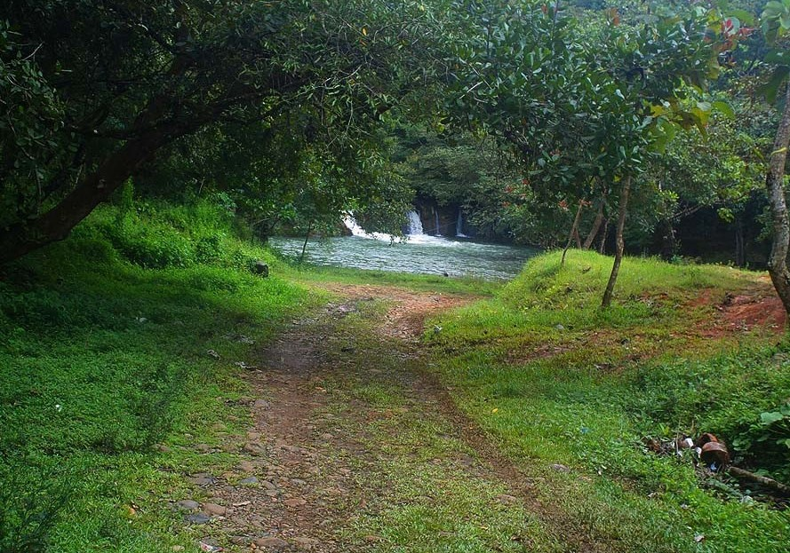

SAN FRANCISCO DE LA MONTAÑA
San Francisco de la Montaña, fundada en 1621,Se dice que los fundadores de este pueblo fueron Fray Pedro Gaspar Rodríguez y Valderas, quien fuera miembro de la orden de Santo Domingo y quien fue conocido como el “Apóstol de los Guaimíes” y estableció el poblado con el objetivo de concentrar a los aborígenes de la región y realizar la conversión de éstos a la fe católica.
San Francisco, se ha convertido en una pujante comunidad que no ha dejado atrás sus tradiciones y su fervor religioso.
Este el punto de partida para llegar a las bellezas que nos ofrecen las montañas de la provincia de Veraguas. Durante la colonia era el punto de acceso a las minas de la región y de esta época data la Iglesia de San Francisco de asis, la cual fue declarada Patrimonio Histórico y actualmente está en proceso de restauración. Es de estilo barroco y presenta un fuerte contraste entre su sencillez exterior, y el lujo y laboriosidad de su interior.Además de la iglesia, San Francisco posee otros atractivos turísticos ya que se encuentra rodeado de caudalosos ríos y terrenos montañosos.
Su clima y su cercanía con Santiago lo hacen un lugar muy atractivo para vacacionar.
LOCALIZACIÓN DE SAN FRANCISCO EN LA PROVINCIA DE VERAGUAS
| Coordenadas | Entidad | Superficie | Altitud | Población; |
| 8ยบ03' N 80ยบ55'0 8.05,80.92 |
Ciudad de Panamá. Provincia de Veraguas. Distrito de Atalaya. |
47.6 km2 | Media 89 m.s.n.m |
4.924 |
Salto de san francisco de la montaña
El Salto de San Francisco,se encuentra dentro de la encantadora comunidad de San Francisco, a 16 kilómetros de la ciudad de Santiago.
¿Como LLegar a el Salto? La ubicación: Estando en la Iglesia de San Francisco, se debe ir por detrás de la misma, hacia la izquierda hasta el Idaan, luego seguir a la mano derecha hasta llegar a una cancha(cuadro) improvisada de fútbol, luego hay un jorón y en frente esta el Salto.
 Es un paisaje que te deja sin palabras al instante, chorros que caen a una olla de aguas mansas que siguen hasta llegar a un río lleno de piedras. En los alrededores se disfruta de mucha vegetación y árboles frutales que acompañan el río en su paso.
En el balneario también hay bancas en donde las personas pueden hacer su picnic y pasar un buen rato con una linda vista, es importante llevar provisiones ya que no hay establecimientos de comida cerca del área. Aunque en verano los chorros del salto se encuentren casi secos, nada impide que se disfrute de las aguas del balneario, mejor aún con más seguridad.
El Salto forma parte de la “Quebrada Honda”, y generalmente la gente disfruta de sus aguas refrescantes en verano pues en invierno tiene demasiada fuerza y pueden ocurrir accidentes.

Chorro Espiritu Santo
El chorro de San Francisco, se encuentra ubicado en la barriada de buenos aires, detras del Colegio Pedro Arrocha Graell, para llegar debes tomar la ruta de la panaderia San Roque (buenos aires), te dirigues hacia tu mano derecha quien va para el cerro de la cruz en san francisco, pasas el puente de tablas, y encontraras una calle de tierra, atu mano izquierda encontaras un pequeño chutre o potrero, entras y sigues el caminito de tierra(no entran carro),y te encontraras con el bello chorro del Espiritu Santo.
Sus aguas y su cascadas son hermosas, en tiempo de verano esta seco, recomendable ir un dia después de la lluvia en compañia de un adulto, ya que este lugar esta lejos del pueblo centrico de San Francisco, se recomienda llevar provisiones ya que no hay tiendas cerca.